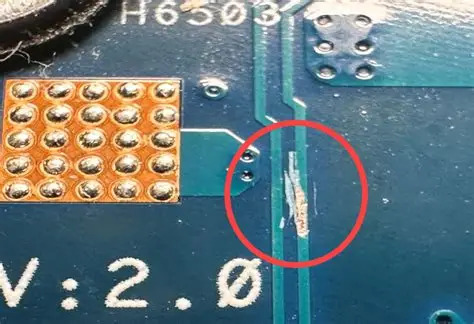

wqxe700在这里
大部分人们使用现代手机的方式使他们与美好生活背道而驰。
wqxe700
上海，还在读高中的男孩
我喜欢编程。更宏大的：我爱复古计算。从纯机械的计算器到8位机我都感兴趣。
编程是一种创作。你能够任意地设计。就像一座屋子，我一会想把一个家具放在这里，一会想要放在那边。这样的内核，与艺术创作一般。你的代码可以成为史诗。
复古计算：就像我的主页上说的，因为在那个个人计算蓬勃发展的年代，你买的真的就是硬件！例如那时，如果你想要接一个“非法”模块，也就是那些能够实现看起来几乎不可能的外设的话，我们会直接刮掉pcb的丝印层和绝缘层，就像这样：

我们可以借此实现很多hack功能。
可能对于我而言，魅力在于这是如此朴素和真诚，它们也可以承担起普通人的日常计算和娱乐功能。那时一切电子生活都很轻。
我不容易找到同伴，但如果你也拆过雅达利的卡带，我们聊一个下午没有问题。
没有关系，因为我还有我的生活哲学：
我一点都不乐意追求顶级电子设备，特别是手机：
手机已经占领我们的生活很长一段时间了。
它本来只是方便人们交流的工具，但是现在却变成了几乎一切社会活动的入口。
我确实想要借现代生活的便利，也就是扫码支付之类的，再加上2G退网，不然我就用nokia。因为这是一台手机，而不是我的外置大脑。
所以我现在使用一台刷了类原生系统的旧安卓机。类原生真的太好看了。root后，至少更加接近我的精神内核：“拥有硬件本身”。不是吗？
没有事情是永恒的，人的信念也不是。但至少在当下，我将“制造一系列美好的电子设备”作为我的目标。快去KickStarter踢我的项目吧！
真正对软件在意的人，应该拥有自己的硬件 --艾伦 凯
你在kickstarter上找不到什么东西的，因为前提是我开始动手做了再说。现在可是瑰丽青春，就算装也要美美耍起...